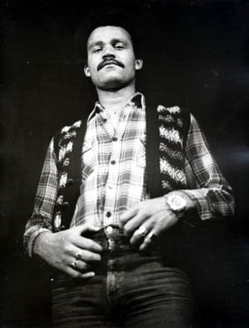

Chapter 5. Demolition Man
During the lull after Stag, Arthur Dutton (our Mr Fix-it as we all knew him) came across a 1-hour made-for-television musical starring the singer Jimmy Helms (a popular soul singer during the 1970's). A rather slight and innocuous programme, it caught Arthur's attention and he presented it for our perusal at a subsequent meeting. Having already bought the LP soundtrack from some remote shop or other, the songs were there for all to hear. Arthur felt this was an ideal vehicle for us to showcase our talents, as it was almost certain never to have been performed on stage. All we had to do was contact the writers.
.jpg) On the face of it the songs initially were
somewhat bland, the actual storyline a little lacking and unlike Arthur many of us couldn't see the
programme's finer points. We wondered
just how good a show it would actually make. After all it was a huge contrast to our previous
production. Everyone's initial wariness about the suitability of the show soon vanished when we got
deeper into it all. The show's composer
John King was only too happy to help us in any way, with a short score and a script, although band
parts had to be filled out by myself helped by what had now become the Genesis Theatre band. We
chose to go ahead with it.
On the face of it the songs initially were
somewhat bland, the actual storyline a little lacking and unlike Arthur many of us couldn't see the
programme's finer points. We wondered
just how good a show it would actually make. After all it was a huge contrast to our previous
production. Everyone's initial wariness about the suitability of the show soon vanished when we got
deeper into it all. The show's composer
John King was only too happy to help us in any way, with a short score and a script, although band
parts had to be filled out by myself helped by what had now become the Genesis Theatre band. We
chose to go ahead with it.
It was now May 1977 and this decision to put on Demolition Man, coincided with the Royal Exchange Theatre running a competition, the winners of which would be allowed to present their show on stage in front of a full audience with the benefit of all the usual professional help from the theatre. The contest was to run for two weeks, every winner got one day in the theatre and no more. We presented Demolition Man, because we hoped that it would attract their interest, as it had never been done anywhere except in that one-hour television format.
To cut a long story short, we won, and on August 1st 1977 Genesis Theatre were to get their day at the Royal Exchange Theatre!
The show itself required only two major leads, a black singer, who was quickly cast in the form of our own Louis Grant and a glamorous lady he meets on his travels, who was cast in the elegant form of Mary Clark! All but a small handful of the songs were to be sung by one or both of them. So it was important to get two good singers and two equally glamorous leads, as they were to spend 90% of the time on stage non-stop.
 A little before we started rehearsals for the show I had bought a Fender Rhodes keyboard with the intention of using it in Demolition Man. The recording used a string synthesizer, so we also borrowed a Logan String Synth for me. The Genesis Theatre band featured only three past members, Chas Coghill on Lead Guitar, Alan Barnes on Sax and of course me! Neil and Mike were sadly unavailable, so instead Alan Ratcliff stepped up to the drum stool and Paul Morell picked up the bass. After a very ragged start with the new line up, things improved dramatically and we developed into a very tight unit. The singers although all very good, were completely outclassed right from the start by Louis who simply shone out like a beacon even in the early rehearsals. It soon became obvious to everyone what a great, uncomplicated and fun family show this was going to be.
Well the great day dawned and we got into the Royal Exchange at just gone 9.00 a.m. and spent most of the morning setting up. My initial reaction to the place was one of shock! It was so intimate, the audience is right on top of you; you can literally see the whites of their eyes. I started to flinch at the thought of the inevitable sound problems we were going to have... and boy did we ever have sound problems! The professional sound guy seemed to take an immediate dislike to us and spent the majority of the day picking holes in our sound (and it's volume)! He proceeded to screen off the Fender Rhodes completely. I put a stop to that straight away, and moved the Fender away from the general direction of the audience and we therefore reached a viable compromise.
The dress rehearsal was very ragged, so we did another! Better, but not perfect. We stopped at 6.00 p.m. to eat and generally chill out for a bit, if such a thing was possible with only 1 ½ hours to go! I was mentally and physically jiggered by this time, but by the start of the evening performance, bucked up for the show which from start to finish was electric! Not only did it go like a dream, the audience loved every single second of it and showed their appreciation at every available space by applauding heartily. But even I didn't guess how the end-bows would go. After we'd all done our bows to tumultuous applause, the last piece finished and we stopped... but the audience didn't! They carried on yelling, shouting and applauding like they were not going to stop.
We were all very moved and it was truly an unforgettable experience. But then I was faced with a dilemma, because I didn't know whether to play it again and hope that everyone else, who was out of sight, would come back and join in, or to wait for some sign. Everyone might have gone back to the dressing rooms and be ignorant of the chaos. Mary and Louis finally saved the day by reappearing, so we shrugged and did the final piece again. Thankfully everyone returned to the stage. We were all so happy that nobody in the dancers bothered with the routine, they just stood around clapping, jumping around, and hugging one another. What a night!